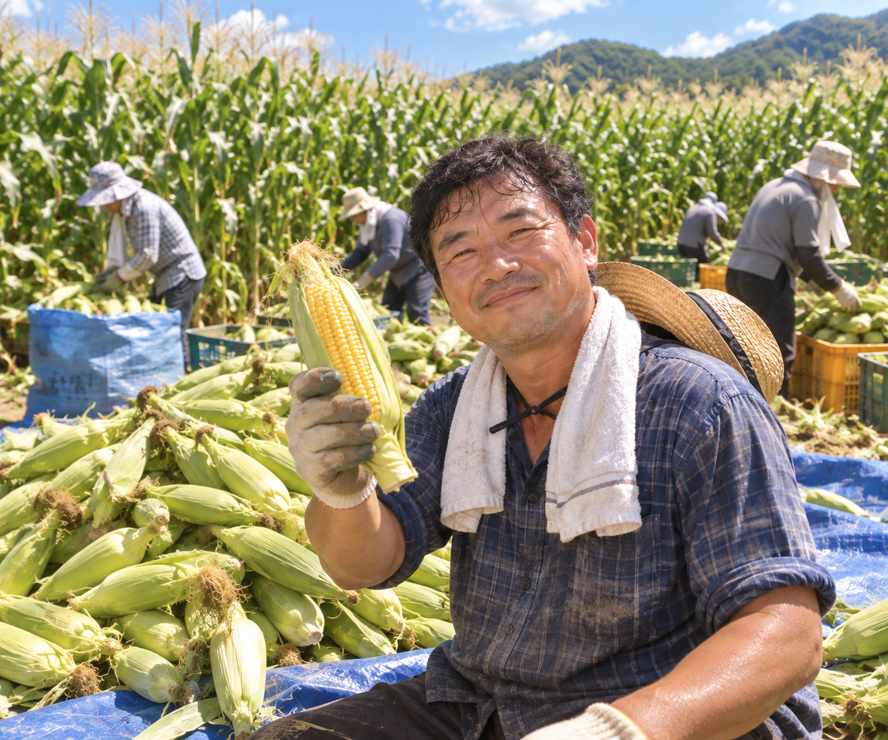

찾아오시는 길 부산광역시 영도구 영선동 나무잎길 11 현조건물 - 123


찰옥수수 함박
동고리
직접다져 부드러운 함바스테이크에 찰옥수수가 들어간 동고리
찰옥수수 함바스테이크, 찰옥수수 고로케, 타르타르소스, 김치, 계란말이, 찰옥수수 감자샐러드가 들어간 푸짐한 한끼의 동고리
주문하기
많이 즐겨
찾는 동고리

우리 땅에서 자란 맛있는 이야기
특산물 동고리

동고리에 담은 한 끼.
우리 지역의 좋은 재료로
매일의 식탁을 조금 더 특별하게.


으뜸리뷰🥹
사람들이 전하는 동고리 이야기


 깐깐한 위생환경
깐깐한 위생환경
 당일 재료 준비
당일 재료 준비당일 요리 원칙
 다양한
다양한메뉴 구성
 위생적
위생적안심 포장
 빠른 배송
빠른 배송